卷积神经网络基础补充
一、误差的计算
（一）图示各个符号的含义
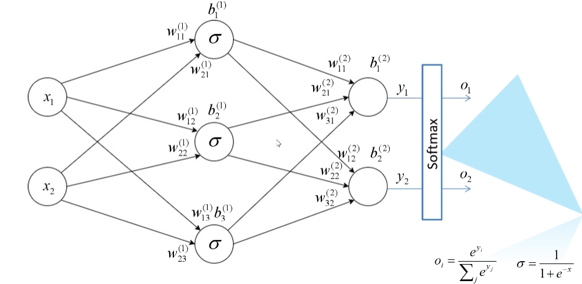
$x$：输入
$σ$：隐层
$w_{ij}^{(k)}$：$i$表示上一层的第$i$的节点，$j$表示本层中第$j$个节点，$k$表示该节点位于第$k$层
（二）计算
1、第一层节点的输出，即$w_{ij}^{(1)}$权值对应的输出
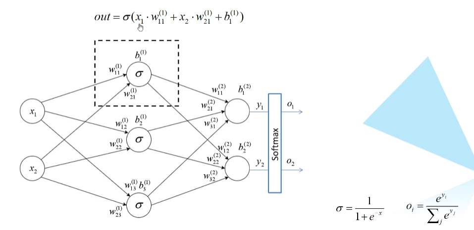
2、最后一层节点的输入，即$w_{ij}^{(2)}$权值对应的输出（$y_1$、$y_2$）
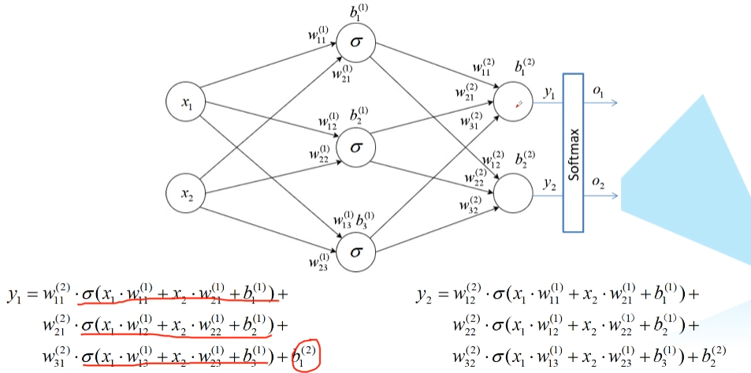
- 注意，最后一层的计算中并没有使用激活函数，因为在计算多位损失的过程中，一般最后一层的激活函数统一使用 softmax 函数
3、Softmax 函数的计算过程
前面计算得到的$y_1$、$y_2$并不符合任一分布，而我们的目的是为了得到一个概率分布，所以我们需要对输出的结果进行Softmax 处理

（三）Cross Entropy Loss 交叉熵损失
针对多分类问题（Softmax 输出，所有输出概率和为1）
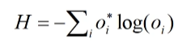
针对二分类问题（Sigmoid 输出，每个输出节点之间互不相干）
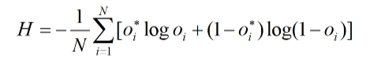
sigmoid 输出的结果不会满足任何一个经验分布（概率分布——和为1）
其中$o_i^$为真实标签值，$o_i$为预测值，*默认$log$以$e$为底等于$ln$
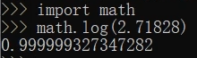
区别
- 多分类问题 Softmax 输出的结果只可能归于某一种类别，如图片可能是猫的概率为0.9，狗的概率为0.1，结果只可能是两者中的一个
- 二分类问题 Sigmoid 输出的结果是归于不同种类别的，如这个照片是人的概率为0.97，是男人的概率为0.7，两者分布不满足经验分布（和不为1）
- 但是实际使用中针对更多的是多分类问题，也就是使用 Softmax 函数
图示结果
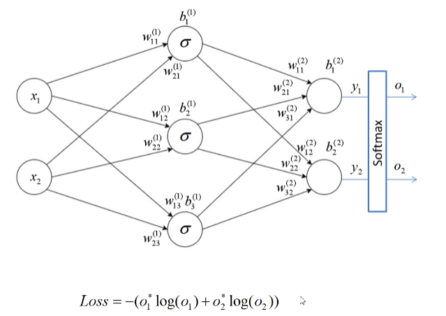
二、误差的反向传播
以损失$Loss$对$w_{11}^{(2)}$的损失梯度为例
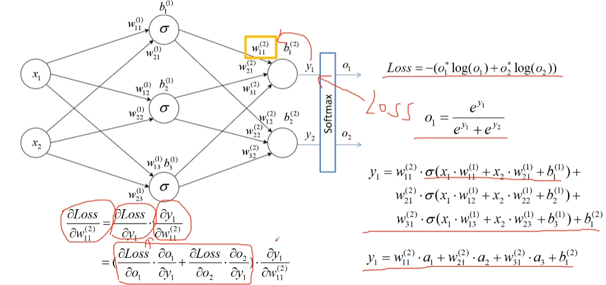
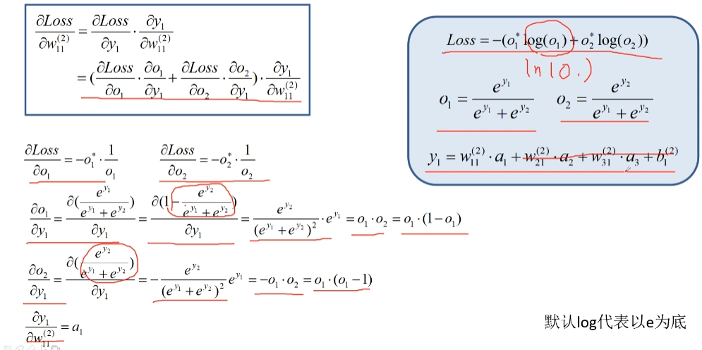
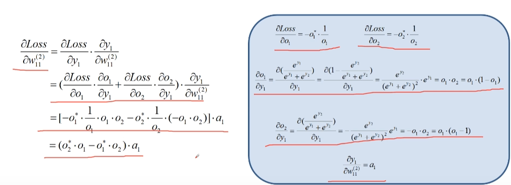
如此，便将我们得到的误差反向传播到了每一个节点，得到了每一个节点的损失梯度
三、权重的更新
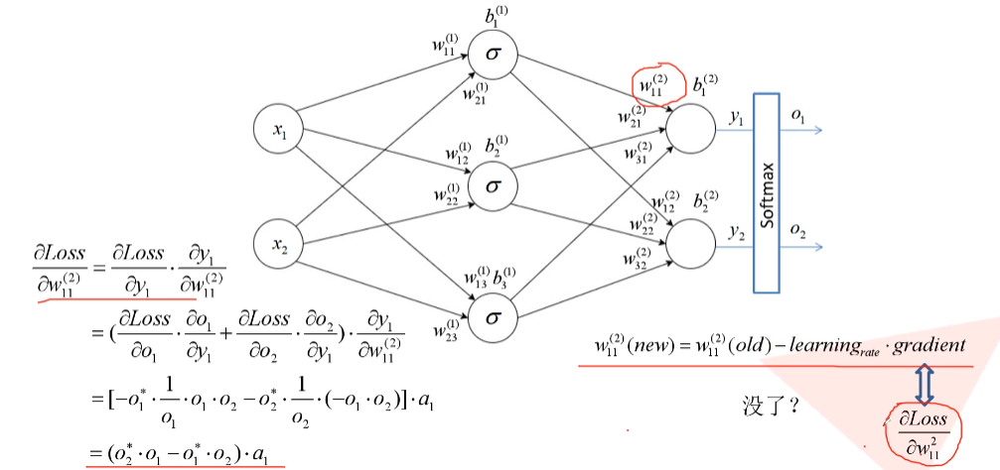
难道以上结果便是我们所需要的？我们所求的梯度是否指向了全局最优的方向？或者说损失减少最快的方向？
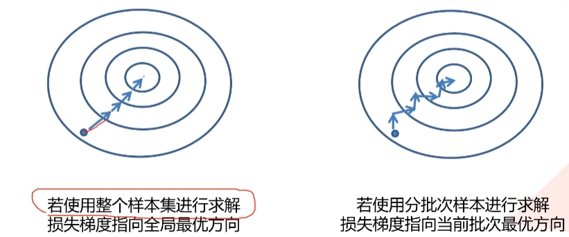
在实际应用中往往不可能一次性将所有数据载入内存（算力也不够），所以只能分批次（batch）训练。
例如，ImageNet 项目是一个用于视觉对象识别软件研究的大型可视化数据库。超过1400万的图像被 ImageNet 手动注释，以指示图片中的对象。在使用ImageNet 项目时，不可能一口气使用整个样本集进行求解吧，这需要的算力资源太大了，不是做不到，而是没有必要，所以，可以使用分批次训练。
求解得到的结果不是最优的，所以需要用到优化器 optimazer。
优化器 optimazer
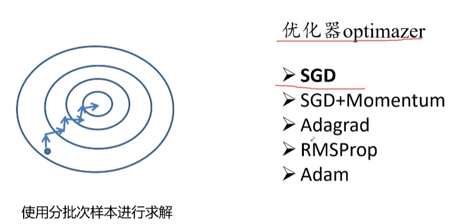
优化器 optimazer 的目的是为了让网络更快的得到收敛。
分批次训练训练指的是对每一个批次进行损失的计算以及误差的反向传播，即 SGD 优化器
1、 SGD 优化器（Stochastic Gradient Descent）
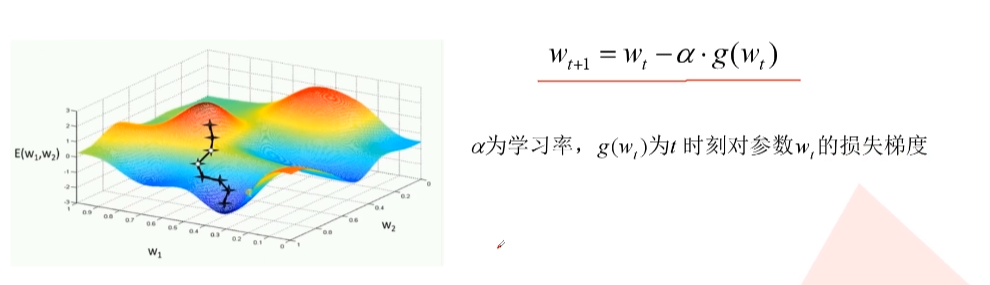
缺点：
- 易受样本噪声影响，如果训练集中标注的结果是错误的，那么计算出来的损失梯度就有问题，可能与理想的梯度方向向背
- 可能陷入局部最优解
为了解决这些缺点，可以加上 Momentum
2、SGD + Momentum 优化器
- 相比 SGD，多了动量部分，即除了计算当前的梯度之外，还会加上之前的梯度
- 引入动量之后，最终的梯度方向就不仅需要考虑本次计算出了的方向，还需要考虑上一次梯度的方向了
- 结果：能够有效抑制噪声的影响
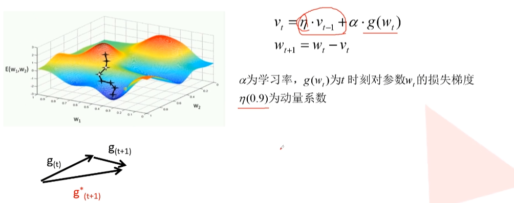
3、Adagrad 优化器（自适应学习率）
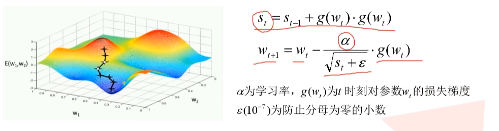
$s_t$ 不断累加梯度的平方和，相当于给学习率加了一个持续变小的权重，以致于达到自适应的效果
但是学习率下降的太快，可能还没收敛就停止训练了
4、RMSProp 优化器（自适应学习率）
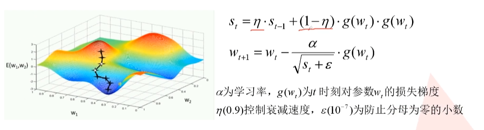
加上了两个系数来控制衰减速度
5、Adam 优化器（自适应学习率）
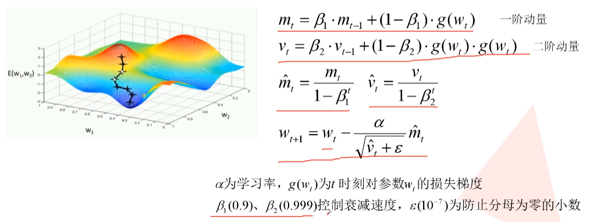
使用的话，一般 SGD + Momentum 优化器用的更多
SGD：速度比较慢，但梯度是沿着比较理想的方向更新的
Momentum：一开始的方向比较偏，但是很快纠正了
Adagrad 和 RMSProp 不仅方向正确，而且速度更新也很快
代码的实践留一留